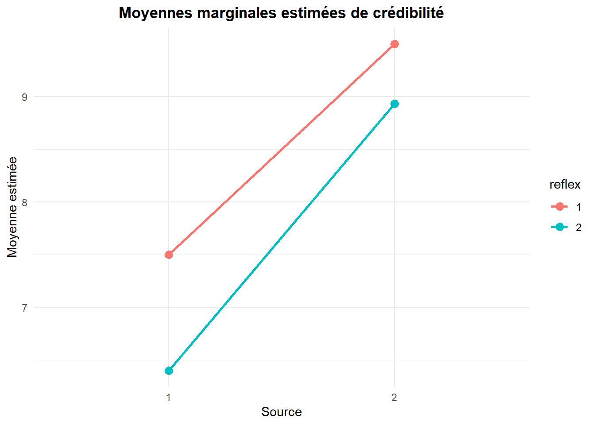
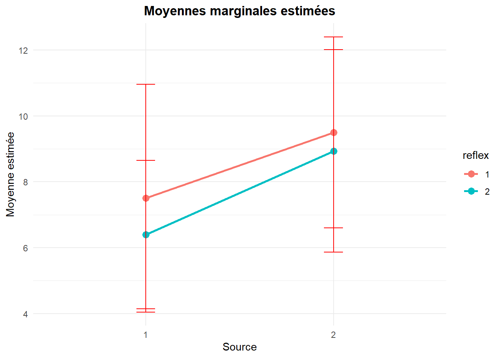
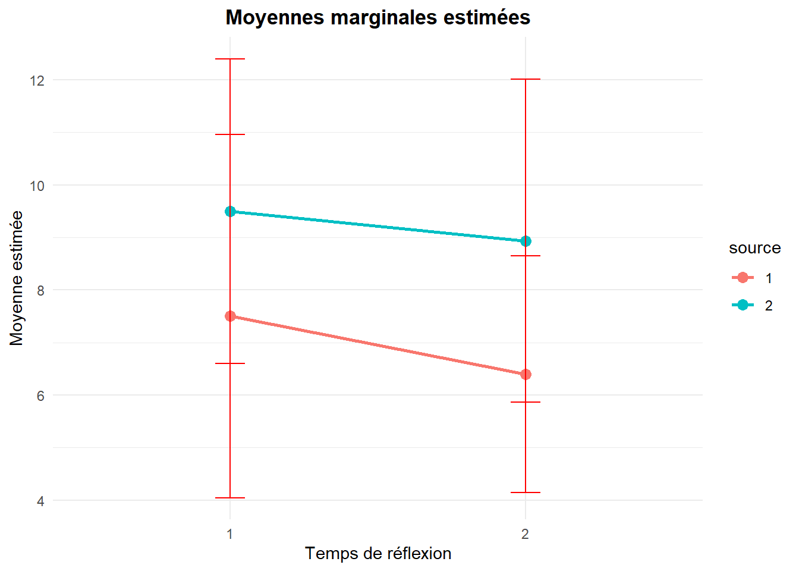
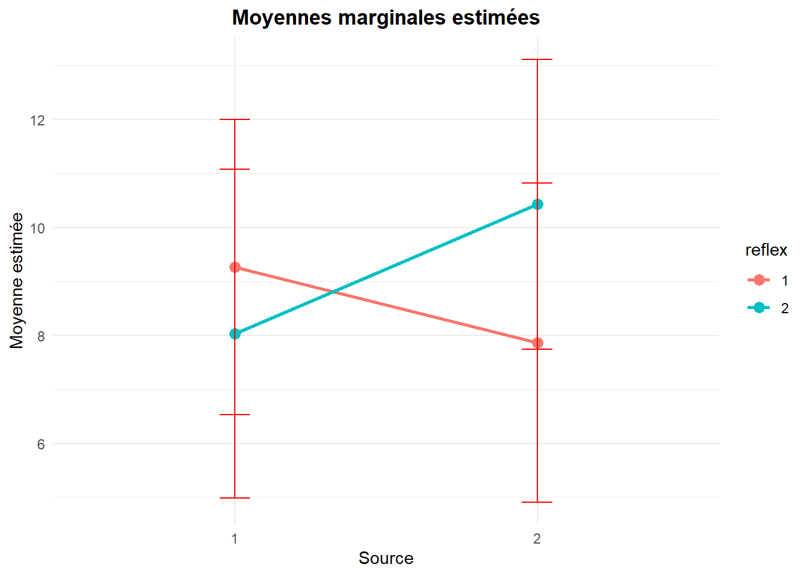
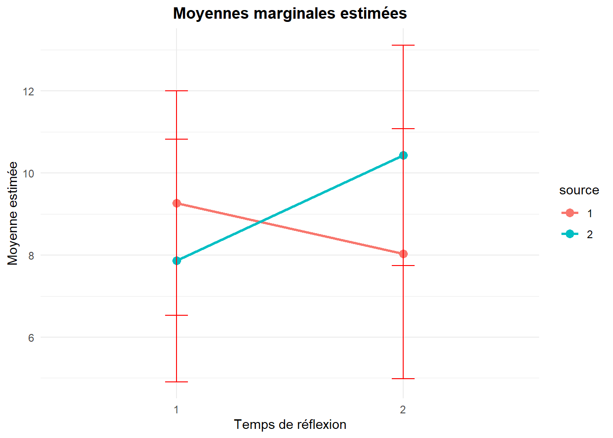

| Nom_Variable | Description |
|---|---|
| Source | Origine perçue du message publicitaire (1 = Brochure du manufacturier ; 2 = Magazine « Protégez-Vous »). |
| Reflex | Temps de réflexion imposé avant l’évaluation (1 = court ; 2 = long). |
| Eval | Évaluation de la marque de robot par le participant après exposition au message. |
| Cred | Score de crédibilité attribué au message publicitaire (échelle de 1 à 15). |
Thème 4: ANOVA à deux facteurs controlés cellules équilibrées
1 Mise en situation
Pour promouvoir une marque de Robot culinaire haut de gamme, le responsable marketing de la compagnie «RobTech» veut évaluer l’effet de la source et du temps de réflexion (Reflex) sur l’efficacité d’une publicité de type «piecemeal» c.à.d. une publicité comparant la marque en question à une marque concurrente «attribut par attribut».
Design de l’étude
120 sujets ont été assignés au hasard à un des quatre groupes de l’étude et, après avoir vu le message publicitaire, devaient répondre à un questionnaire pour mesurer l’évaluation de la marque cible (échelle de 1 à 15) et la crédibilité accordée au message publicitaire (échelle de 1 à 15).
Deux facteurs ont été manipulés pour créer les différents types de messages :
1) Source des informations du message (SOURCE) :
Selon la brochure d’information de la compagnie «RobTech»
Selon le magazine «Protégez vous»
2) Temps de réflexion accordé (REFLEX) :
Temps de réflexion court
Temps de réflexion long
Les données
Le fichier des données simulées correspondant à cette étude se trouve dans le fichier « Robtech_ANOVA_2.csv ».
Variables
Après avoir visionné un des messages publicitaires (assignés aléatoirement), les participants devaient évaluer la marque cible et donner un score de crédibilité au message (sur une échelle de 1 à 15).
# Définir le répertoire de travail où se trouve le fichier de données
setwd("C:/Users/Fatou/OneDrive - HEC Montréal/PROJET SUPERVISE/Data")
# Importer le jeu de données
robtech <- read.csv("RobTech_ANOVA_2.csv", sep = ";", header = TRUE)
# Reconvertir les variables
robtech$source<-as.factor(robtech$source)
robtech$reflex<-as.factor(robtech$reflex)Ce plan d’expérience nous permet de définir 4 groupes (populations) et de comparer les 4 moyennes suivantes, pour chaque variable :
| Reflex_1 | Reflex_2 | |
|---|---|---|
| Source_1 | μ₁₁ | μ₁₂ |
| Source_2 | μ₂₁ | μ₂₂ |
1.1 Résultats observés(échantillons): variable Crédibilité du message
library(dplyr)
# Calculer les statistiques descriptives de la variable cred en fonction des variables source et reflex
robtech_stats <- robtech %>%
group_by(source, reflex) %>%
summarise(
Moyenne = mean(cred, na.rm = TRUE),
Écart_type = sd(cred, na.rm = TRUE),
N = n()
)
print(robtech_stats)# A tibble: 4 × 5
# Groups: source [2]
source reflex Moyenne Écart_type N
<fct> <fct> <dbl> <dbl> <int>
1 1 1 7.5 3.45 30
2 1 2 6.4 2.25 30
3 2 1 9.5 2.90 30
4 2 2 8.93 3.07 30library(ggplot2)
# Créer un graphique des moyennes marginales estimées
ggplot(robtech_stats, aes(x = source, y = Moyenne, group = reflex, color = reflex)) +
geom_point(size = 3) +
geom_line(size = 1) +
labs(
title = "Moyennes marginales estimées de crédibilité",
x = "Source",
y = "Moyenne estimée"
) +
theme_minimal()
1.1.1 Résultats observés (échantillons): variable Évaluation de la marque
# Calculer les statistiques descriptives de la variable eval en fonction des variables source et reflex
robtech_stats2 <- robtech %>%
group_by(source, reflex) %>%
summarise(
Moyenne = mean(eval, na.rm = TRUE),
Écart_type = sd(eval, na.rm = TRUE),
N = n()
)
print(robtech_stats2)# A tibble: 4 × 5
# Groups: source [2]
source reflex Moyenne Écart_type N
<fct> <fct> <dbl> <dbl> <int>
1 1 1 9.27 2.74 30
2 1 2 8.03 3.05 30
3 2 1 7.87 2.96 30
4 2 2 10.4 2.69 30# Créer un graphique des moyennes marginales estimées
ggplot(robtech_stats2, aes(x = source, y = Moyenne, group = reflex, color = reflex)) +
geom_point(size = 3) +
geom_line(size = 1) +
labs(
title = "Moyennes marginales estimées de crédibilité",
x = "Source",
y = "Moyenne estimée"
) +
theme_minimal()1.2 Cadre théorique
Le but d’une ANOVA à deux facteurs est d’étudier comment et dans quelle mesure les niveaux des facteurs A et B influencent la moyenne d’une variable d’intérêt Y.
Y: variable dépendante quantitative.
2 facteurs:
Facteur A avec a niveaux
Facteur B avec b niveaux
Le croisement des 2 facteurs crée a x b groupes.
| Facteur.A | niveau.1 | niveau.2 | ... | niveau.b |
|---|---|---|---|---|
| niveau 1 | μ₁₁ | μ₁₂ | ... | μ₁ᵦ |
| niveau 2 | μ₂₁ | μ₂₂ | ... | μ₂ᵦ |
| ... | ... | ... | ... | ... |
| niveau a | μₐ₁ | μₐ₂ | ... | μₐᵦ |
μᵢⱼ : moyenne de la variable Y pour le groupe correspondant au iième niveau du facteur A et au jième niveau du facteur B.
1.2.1 Échantillon
| Facteur.A | niveau.1 | niveau.2 | ... | niveau.b |
|---|---|---|---|---|
| niveau 1 | Y₁₁₁, Y₁₁₂, ..., Y₁₁ₙ₁ | Y₁₂₁, Y₁₂₂, ..., Y₁₂ₙ₁₂ | ... | Y₁ᵦ₁, Y₁ᵦ₂, ..., Y₁ᵦₙ₁ᵦ |
| niveau 2 | Y₂₁₁, Y₂₁₂, ..., Y₂₁ₙ₂₁ | Y₂₂₁, Y₂₂₂, ..., Y₂₂ₙ₂₂ | ... | Y₂ᵦ₁, Y₂ᵦ₂, ..., Y₂ᵦₙ₂ᵦ |
| ... | ... | ... | ... | ... |
| niveau a | Yₐ₁₁, Yₐ₁₂, ..., Yₐ₁ₙₐ | Yₐ₂₁, Yₐ₂₂, ..., Yₐ₂ₙₐ₂ | ... | Yₐᵦ₁, Yₐᵦ₂, ..., Yₐᵦₙₐᵦ |
ùêßùíäùíã:nombre d‚Äôobservations dans le groupe correspondant au i√®me niveau du facteur A et au j√®me niveau du facteur B (cellule (i,j)) .
ùíÄùíäùíãùíå: observation du k√®me sujet dans le groupe correspondant au i√®me niveau du facteur A et au j√®me niveau du facteur B.
1.3 ANOVA à deux facteurs controlés avec cellules équilibrées
L’utilisation des méthodes statistiques sont différentes selon que les données sont équilibrées ou non. Par données équilibrées, on entend un design ou plan d’expérience où chaque cellule (définissant un groupe) contient le même nombre d’observations.
Dans la mise en situation définie au début du cours, chaque cellule contient 30 observations.
Cas 1: Cellules équilibrées (tous les nij sont égaux)
| Facteur.A | niveau.1 | niveau.2 | ... | niveau.b | Moyenne.marginale.Facteur.A |
|---|---|---|---|---|---|
| niveau 1 | μ₁₁ | μ₁₂ | ... | μ₁ᵦ | μ₁• |
| niveau 2 | μ₂₁ | μ₂₂ | ... | μ₂ᵦ | μ₂• |
| ... | ... | ... | ... | ... | ... |
| niveau a | μₐ₁ | μₐ₂ | ... | μₐᵦ | μₐ• |
| Moyenne marginale Facteur B | μ•₁ | μ•₂ | ... | μ•ᵦ | μ Moyenne globale |
Moyenne marginale du niveau i du facteur A.
\[ \mu_{i\bullet} = \frac{1}{b} \sum_{j=1}^{b} \mu_{ij} \]
Moyenne marginale du niveau j du facteur B.
\[ \mu_{\bullet j} = \frac{1}{a} \sum_{i=1}^{a} \mu_{ij} \]
Moyenne globale (moyenne des moyennes).
\[ \mu = \frac{1}{ab} \sum_{i=1}^{a} \sum_{j=1}^{b} \mu_{ij} \]
| Source | Court | Long | Moyenne_Source |
|---|---|---|---|
| Brochure du manufacturier | 7.5 (n=30) | 6.4 (n=30) | 6.95 = (7.5+6.4)/2 |
| Protégez vous | 9.5 (n=30) | 8.93 (n=30) | 9.22 |
| Moyenne marginale Facteur Reflex | 8.5 = (7.5+9.5)/2 | 7.67 | 8.08 |
| Source | Court | Long | Moyenne_Source |
|---|---|---|---|
| Brochure du manufacturier | 9.27 (n=30) | 8.03 (n=30) | 8.67 = (9.27+8.03)/2 |
| Protégez vous | 7.87 (n=30) | 10.43 (n=30) | 9.15 |
| Moyenne marginale Facteur Reflex | 8.57 = (9.27+7.87)/2 | 9.23 | 8.9 |
1.3.1 Interaction entre les facteurs
On débute une ANOVA à deux facteurs ou plus par une analyse d’interaction entre les facteurs.
- S’il n’y a pas d’interaction entre 2 facteurs, la différence des moyennes entre 2 niveaux donnés d’un facteur demeure sensiblement la même peu importe le niveau de l’autre facteur et vice-versa.
Retour sur l’exemple: Variable ‘’Cred’’
# Moyennes estimées en fonction de Source
ggplot(robtech_stats, aes(x = source, y = Moyenne, group = reflex, color = reflex)) +
geom_point(size = 3) +
geom_line(size = 1) +
geom_errorbar(aes(ymin = Moyenne - Écart_type, ymax = Moyenne + Écart_type), width = 0.1, color = "red") +
labs(title = "Moyennes marginales estimées", x = "Source", y = "Moyenne estimée") +
theme_minimal()
# Moyennes estimées en fonction de Reflex
ggplot(robtech_stats, aes(x = reflex, y = Moyenne, group = source, color = source)) +
geom_point(size = 3) +
geom_line(size = 1) +
geom_errorbar(aes(ymin = Moyenne - Écart_type, ymax = Moyenne + Écart_type), width = 0.1, color = "red") +
labs(title = "Moyennes marginales estimées", x = "Temps de réflexion", y = "Moyenne estimée") +
theme_minimal()
- S’il y a interaction entre 2 facteurs, la différence des moyennes entre 2 niveaux donnés d’un facteur peut varier selon le niveau de l’autre facteur.
Retour sur l’exemple 2: Variable ‘’Eval’’
# Moyennes estimées en fonction de Source
ggplot(robtech_stats2, aes(x = source, y = Moyenne, group = reflex, color = reflex)) +
geom_point(size = 3) +
geom_line(size = 1) +
geom_errorbar(aes(ymin = Moyenne - Écart_type, ymax = Moyenne + Écart_type), width = 0.1, color = "red") +
labs(title = "Moyennes marginales estimées", x = "Source", y = "Moyenne estimée") +
theme_minimal()
# Moyennes estimées en fonction de Reflex
ggplot(robtech_stats2, aes(x = reflex, y = Moyenne, group = source, color = source)) +
geom_point(size = 3) +
geom_line(size = 1) +
geom_errorbar(aes(ymin = Moyenne - Écart_type, ymax = Moyenne + Écart_type), width = 0.1, color = "red") +
labs(title = "Moyennes marginales estimées", x = "Temps de réflexion", y = "Moyenne estimée") +
theme_minimal()
1.4 Hypothèses générales d’intérêt
- Existe-t-il une interaction entre les facteurs A et B ?
\[ H_{0AB} : \mu_{ij} - \mu_{im} - \mu_{lj} + \mu_{lm} = 0 \quad \text{pour tout } (i,j,l,m) \quad \text{(pas d'interaction)} \]
\[ H_{1AB} : \mu_{ij} - \mu_{im} - \mu_{lj} + \mu_{lm} \neq 0 \quad \text{pour au moins un } (i,j,l,m) \quad \text{(interaction)} \]
- Test sur l’effet global du facteur A
\[ H_{0A} : \mu_{1\bullet} = \mu_{2\bullet} = \cdots = \mu_{a\bullet} \]
\[ H_{1A} : \text{les } \mu_{i\bullet} \text{ ne sont pas tous égaux.} \]
(l’effet global du facteur A est significatif)
- Test sur l’effet global du facteur B
\[ H_{0B} : \mu_{\bullet 1} = \mu_{\bullet 2} = \cdots = \mu_{\bullet b} \]
\[ H_{1B} : \text{les } \mu_{\bullet j} \text{ ne sont pas tous égaux.} \]
(l’effet global du facteur B est significatif)
1.5 Méthodologie
On commence par tester s’il y a interaction (H0AB)
Si on ne rejette pas l’hypothèse H0AB (aucune interaction significative n’a été détectée), on pourra alors poursuivre l’analyse et tester les effets globaux H0A et H0B à partir du même tableau d’Anova (Tests of Between-Sujects Effects).
Si on rejette l’hypothèse H0AB, alors l’interaction est significative (l’effet du facteur A n’est pas le même pour tous les niveaux du facteur B). Il ne servira à rien de tester les effets globaux H0A et H0B. On devra plutôt comparer les niveaux du facteur A à l’intérieur de chaque niveau du facteur B et vice-versa. Ce type d’effets est appelé « effet simple » et sera abordé plus loin.
L’analyse pourra par la suite être raffinée en procédant à des comparaisons multiples comme dans le cas de l’ANOVA à un facteur contrôlé.
1.5.1 Échantillons
| Facteur.A | niveau.1 | niveau.2 | ... | niveau.b | Moyenne.Facteur.A |
|---|---|---|---|---|---|
| niveau 1 | YÃÑ‚ÇÅ‚ÇÅ. | | YÃÑ‚ÇÇ‚ÇÅ. | | .. | | YÃÑ‚Çê‚ÇÅ. | | YÃÑ.‚ÇÅ. |
| niveau 2 | YÃÑ‚ÇÅ‚ÇÇ. | | YÃÑ‚ÇÇ‚ÇÇ. | | .. | | YÃÑ‚Çê‚ÇÇ. | | YÃÑ.‚ÇÇ. |
| ... | ... | ... | ... | ... | ... |
| niveau a | YÃÑ‚ÇÅb. | | YÃÑ‚ÇÇb. | | .. | | YÃÑ‚Çêb. | | YÃÑ.b. |
| Moyenne Facteur B | YÃÑ‚ÇÅ.. | | YÃÑ‚ÇÇ.. | | .. | | YÃÑ‚Çê.. | | YÃÑ... |
\[ \text{Estimé de l’effet global du niveau } i \text{ du facteur A :} \quad \overline{Y}_{i..} - \overline{Y}_{...} \]
\[ \text{Estimé de l’effet global du niveau } j \text{ du facteur B :} \quad \overline{Y}_{.j.} - \overline{Y}_{...} \]
\[ \text{Estimé de l’effet d’interaction entre le niveau } i \text{ du facteur A} \\ \text{et le niveau } j \text{ du facteur B :} \quad \overline{Y}_{ij.} - \overline{Y}_{i..} - \overline{Y}_{.j.} + \overline{Y}_{...} \]
1.5.2 Décomposition de la variabilité totale
La variabilité totale (SSc) observée peut être décomposée en 4 parties :
\[ SS_c = SS_A + SS_B + SS_{AB} + SS_e \]
# Créer un dataframe avec les formules et descriptions
df <- data.frame(
"Formule" = c(
"SS_A = nb Σ (Ȳ_i.. - Ȳ_...)²",
"SS_B = na Σ (Ȳ_.j. - Ȳ_...)²",
"SS_AB = n Σ Σ (Ȳ_ij. - Ȳ_i.. - Ȳ_.j. + Ȳ_...)²",
"SS_e = Σ Σ Σ (Y_ijk - Ȳ_ij.)²"
),
"Description" = c(
"Variabilité due aux différences entre les niveaux du facteur A",
"Variabilité due aux différences entre les niveaux du facteur B",
"Variabilité due aux interactions entre les niveaux du facteur A et ceux du facteur B",
"Variabilité résiduelle qui n’est pas expliquée par les facteurs et est due aux erreurs aléatoires"
)
)
# Afficher le tableau
kable(df, align = "c", caption = "Tableau des sommes des carrés") %>%
kable_styling(full_width = FALSE, bootstrap_options = c("striped", "hover")) %>%
row_spec(0, bold = TRUE, background = "#00CCFF", color = "black") | Formule | Description |
|---|---|
| SS_A = nb Σ (Ȳ_i.. - Ȳ_...)² | | Variabilité due aux différences entre les niveaux du facteur A |
| SS_B = na Σ (Ȳ_.j. - Ȳ_...)² | | Variabilité due aux différences entre les niveaux du facteur B |
| SS_AB = n Σ Σ (Ȳ_ij. - Ȳ_i.. - Ȳ_.j. + Ȳ_.. | )² | Variabilité due aux interactions entre les niveaux du facteur A et ceux du facteur B |
| SS_e = Σ Σ Σ (Y_ijk - Ȳ_ij.)² | | Variabilité résiduelle qui n’est pas expliquée par les facteurs et est due aux erreurs aléatoires |
1.6 Les tests d’hypothèses appropriées dans le contexte d’ANOVA à deux facteurs
\[ \text{Test sur l’interaction : basé sur la statistique } F = \frac{\frac{SS_{AB}}{(a-1)(b-1)}}{\frac{SS_e}{ab(n-1)}}. \]
\[ \text{Test sur l’effet global du facteur A : basé sur } F = \frac{\frac{SS_A}{(a-1)}}{\frac{SS_e}{ab(n-1)}}. \]
\[ \text{Test sur l’effet global du facteur B : basé sur } F = \frac{\frac{SS_B}{(b-1)}}{\frac{SS_e}{ab(n-1)}}. \]
1.7 Test d’interaction entre les facteurs
Existe-t-il une interaction significative entre le facteur source et reflex pour la variable crédibilité?
H‚ÇÄ :ùëñùëô ùëõ‚Ä≤ ùë¶ ùëé ùëùùëéùë† ùëë‚Ä≤ ùëñùëõùë°ùëíùëüùëéùëêùë°ùëñùëúùëõ ùëíùëõùë°ùëüùëí ùëôùëíùë† ùëìùëéùëêùë°ùëíùë¢ùëüùë†
H‚ÇÅ :ùëñùëô ùë¶ ùëé ùë¢ùëõùëí ùëñùëõùë°ùëíùëüùëéùëêùë°ùëñùëúùëõ ùëíùëõùë°ùëüùëí ùëôùëíùë† ùëìùëéùëêùë°ùëíùë¢ùëüùë†
library(car)
options(contrasts = c("contr.sum", "contr.poly"))
# Effectuer l'ANOVA avec interaction entre source et reflex pour la variable crédibilité
anova_cred<- Anova(lm(cred ~ source * reflex, data = robtech), type=3)
# Afficher les résultats de l'ANOVA
anova_credAnova Table (Type III tests)
Response: cred
Sum Sq Df F value Pr(>F)
(Intercept) 7840.8 1 900.4719 < 2.2e-16 ***
source 154.1 1 17.7013 5.118e-05 ***
reflex 20.8 1 2.3926 0.1246
source:reflex 2.1 1 0.2450 0.6216
Residuals 1010.1 116
---
Signif. codes: 0 '***' 0.001 '**' 0.01 '*' 0.05 '.' 0.1 ' ' 1P-value = 0.622 > niveau de signification (α) = 0.05. donc on ne rejette pas l’hypothèse nulle.
Au niveau de signification 5%, les données de nous fournissent pas assez de preuves pour conclure à une interaction statistiquement significative entre les facteurs.
On passe donc à l’analyse des effets globaux dans cette même table d’ANOVA.
1.8 Analyse fine des résultats lorsque l’interaction n’est pas significative
- Test de l’effet global du facteur Source:
H‚ÇÄ : ùúáùëèùëüùëúùëê‚Ñéùë¢ùëüùëí ùëëùë¢ ùëöùëéùëõùë¢ùëìùëéùëêùë°ùë¢ùëüùëñùëíùëü=ùúáùëùùëüùëúùë°ùëíùëîùëíùëß ùë£ùëúùë¢ùë†
H‚ÇÅ :ùúáùëèùëüùëúùëê‚Ñéùë¢ùëüùëí ùëëùë¢ ùëöùëéùëõùë¢ùëìùëéùëêùë°ùë¢ùëüùëñùëíùëü‚â†ùúáùëùùëüùëúùë°ùëíùëîùëíùëß ùë£ùëúùë¢ùë†
P-value=0.000, il y a une différence significative entre les moyennes marginales du facteur Source.
Test de l’effet global du facteur Reflex:
H‚ÇÄ : ùúáùëêùëúùë¢ùëüùë°=ùúáùëôùëúùëõùëî
H‚ÇÅ :ùúáùëêùëúùë¢ùëüùë°‚â†ùúáùëôùëúùëõùëî
P-value=0.125, il n’y a pas de différence significative entre les moyennes marginales du facteur Reflex.
Pour chaque facteur dont l’effet est significatif :
Mesurer l’importance de l’effet (partial eta squared) ;S’intéresser à l’intervalle de confiance pour chaque moyenne marginale ;
Comparer ces moyennes marginales entre elles à l’aide de méthodes de comparaisons multiples (tests et intervalles sur la différence entre les moyennes).
1.8.1 Estimated Marginal means- Source
#installer emmeans
#install.packages("emmeans", repos = "https://cloud.r-project.org/")
# Charger la bibliothèque
library(emmeans)
# Test ANOVA
anova_estime_source <- aov(cred ~ source, data = robtech)
# Obtenir les moyennes marginales estimées
moyenne_estime_source <- emmeans(anova_estime_source, ~ source)
summary(moyenne_estime_source) source emmean SE df lower.CL upper.CL
1 6.95 0.382 118 6.19 7.71
2 9.22 0.382 118 8.46 9.97
Confidence level used: 0.95 # Comparaisons par paires
pairwise_source <- pairs(moyenne_estime_source)
summary(pairwise_source) contrast estimate SE df t.ratio p.value
source1 - source2 -2.27 0.54 118 -4.196 0.0001# Test univarié
options(contrasts = c("contr.sum", "contr.poly"))
univarie_source <- Anova(anova_estime_source, type = "III")
print(univarie_source)Anova Table (Type III tests)
Response: cred
Sum Sq Df F value Pr(>F)
(Intercept) 7840.8 1 895.633 < 2.2e-16 ***
source 154.1 1 17.606 5.289e-05 ***
Residuals 1033.0 118
---
Signif. codes: 0 '***' 0.001 '**' 0.01 '*' 0.05 '.' 0.1 ' ' 11.8.2 Estimated Marginal means- Reflex
# Test ANOVA
anova_estime_reflex <- aov(cred ~ reflex, data = robtech)
# Obtenir les moyennes marginales estimées
moyenne_estime_reflex <- emmeans(anova_estime_reflex, ~ reflex)
summary(moyenne_estime_reflex) reflex emmean SE df lower.CL upper.CL
1 8.50 0.406 118 7.70 9.30
2 7.67 0.406 118 6.86 8.47
Confidence level used: 0.95 # Comparaisons par paires
pairwise_reflex <- pairs(moyenne_estime_reflex)
summary(pairwise_reflex) contrast estimate SE df t.ratio p.value
reflex1 - reflex2 0.833 0.574 118 1.452 0.1492# Test univarié
options(contrasts = c("contr.sum", "contr.poly"))
univarie_reflex <- Anova(anova_estime_reflex, type = "III")
print(univarie_reflex)Anova Table (Type III tests)
Response: cred
Sum Sq Df F value Pr(>F)
(Intercept) 7840.8 1 793.2709 <2e-16 ***
reflex 20.8 1 2.1077 0.1492
Residuals 1166.3 118
---
Signif. codes: 0 '***' 0.001 '**' 0.01 '*' 0.05 '.' 0.1 ' ' 11.9 Test d’interaction entre les facteurs
Existe-t-il une interaction significative entre le facteur source et reflex pour la variable évaluation?
H‚ÇÄ :ùëñùëô ùëõ‚Ä≤ ùë¶ ùëé ùëùùëéùë† ùëë‚Ä≤ ùëñùëõùë°ùëíùëüùëéùëêùë°ùëñùëúùëõ ùëíùëõùë°ùëüùëí ùëôùëíùë† ùëìùëéùëêùë°ùëíùë¢ùëüùë†
H‚ÇÅ :ùëñùëô ùë¶ ùëé ùë¢ùëõùëí ùëñùëõùë°ùëíùëüùëéùëêùë°ùëñùëúùëõ ùëíùëõùë°ùëüùëí ùëôùëíùë† ùëìùëéùëêùë°ùëíùë¢ùëüùë†
options(contrasts = c("contr.sum", "contr.poly"))
# Effectuer l'ANOVA avec interaction entre source et reflex pour la variable crédibilité
anova_eval <- Anova(lm(eval ~ source * reflex, data = robtech), type=3)
# Afficher les résultats de l'ANOVA
anova_evalAnova Table (Type III tests)
Response: eval
Sum Sq Df F value Pr(>F)
(Intercept) 9505.2 1 1161.0423 < 2.2e-16 ***
source 7.5 1 0.9161 0.3404888
reflex 13.3 1 1.6286 0.2044403
source:reflex 108.3 1 13.2286 0.0004127 ***
Residuals 949.7 116
---
Signif. codes: 0 '***' 0.001 '**' 0.01 '*' 0.05 '.' 0.1 ' ' 1P-value = 0.000 > niveau de signification (α) = 0.05 donc on rejette l’hypothèse nulle.
Au seuil de signification 5%, on peut conclure à une interaction statistiquement significative entre les facteurs.
L’effet d’un facteur est diffèrent selon le niveau de l’autre facteur.
On ne s’intéresse plus aux effets globaux.
On passe donc à l’analyse fine des résultats c.à.d. explorer l’effet d’un facteur à l’intérieur de chaque niveau de l’autre.
1.10 Analyse fine des résultats lorsque l’interaction est significative
On voudra explorer l’effet d’un facteur à l’intérieur de chaque niveau de l’autre.
Les différences entre les moyennes d’un facteur pour un niveau donné de l’autre facteur sont appelées « effets simples ».
Par exemple, on pourra comparer les moyennes du facteur A pour un niveau fixé, j disons, du facteur B. C’est-à-dire comparer entre elles les moyennes μ1j, μ2j , …, μaj. Cette comparaison peut être effectuée pour chaque niveau du facteur B.
De même, on pourra comparer les moyennes du facteur B pour un niveau fixé, i disons, du facteur A. C’est-à-dire comparer entre elles μᵢ₁ ,μᵢ₂ , …, μᵢᵦ. -Cette comparaison peut être effectuée pour chaque niveau du facteur A.
En R, lorsque les facteurs ont deux niveaux, une manière de procéder est de réécrire le modèle comme une ANOVA à un facteur et d’utiliser la fonction aov() pour effectuer une ANOVA à un facteur.
1.11 Création des groupes
Un modèle d’ANOVA à deux facteurs contrôlés A et B comportant a et b niveaux respectivement peut toujours être réécrit comme un modèle d’ANOVA à un facteur contrôlé avec a * b niveaux (ou groupes).
Retour à l’exemple:
Comme il y a une interaction significative pour la variable « évaluation », effectuons la comparaison des moyennes d’un facteur séparément selon les niveaux de l’autre facteur.
Dans le fichier de données « Anova_ex2.csv », la variable « groupe » est définie de la manière suivante :
1 → groupe brochure du manufacturier et temps de réflexion court
2→ groupe brochure du manufacturier et temps de réflexion long
3 → groupe protégez vous et temps de réflexion court
4 → groupe protégez vous et temps de réflexion long
1.12 Syntaxe pour la création des groupes
Pour créer cette nouvelle variable groupe on peut utiliser les commandes suivantes sur R
# Créer la variable groupe avec ifelse
robtech$groupe <- ifelse(robtech$source == 1 & robtech$reflex == 1, 1,
ifelse(robtech$source == 1 & robtech$reflex == 2, 2,
ifelse(robtech$source == 2 & robtech$reflex == 1, 3,
ifelse(robtech$source == 2 & robtech$reflex == 2, 4, NA))))
robtech$groupe <- as.factor(robtech$groupe) # Pour le test post-hoc LSD
library(DescTools) # Pour le test post-hoc LSD
# ANOVA évaluation de la variable eval selon les groupes
anova_groupe <- aov(eval ~ groupe, data = robtech)
# Comparaisons post-hoc LSD
posthoc <- PostHocTest(anova_groupe, method = "lsd")
# Résultat
print(posthoc)
Posthoc multiple comparisons of means : Fisher LSD
95% family-wise confidence level
$groupe
diff lwr.ci upr.ci pval
2-1 -1.2333333 -2.6965662 0.22989954 0.09773 .
3-1 -1.4000000 -2.8632329 0.06323287 0.06058 .
4-1 1.1666667 -0.2965662 2.62989954 0.11701
3-2 -0.1666667 -1.6298995 1.29656621 0.82191
4-2 2.4000000 0.9367671 3.86323287 0.00152 **
4-3 2.5666667 1.1034338 4.02989954 0.00072 ***
---
Signif. codes: 0 '***' 0.001 '**' 0.01 '*' 0.05 '.' 0.1 ' ' 11.12.1 Retour à l’exemple
Hypothèses d’intérêt pour l’analyse des effets simples du facteur source sur l’évaluation moyenne ?
Si Reflex = court On compare les moyennes des groupes 1&3 (revoir la définition des groupes)
Si Reflex= long On compare les moyennes des groupes 2&4
Hypothèses d’intérêt pour l’analyse des effets simples du facteur reflex sur l’évaluation moyenne ?
Si Source = brochure du manufacturier On compare les moyennes des groupes 1&2
Si Source = Protégez vous On compare les moyennes des groupes 3&4
Exercice:
effectuer les tests d’hypothèses et conclure dans le contexte du problème (implications managériales).